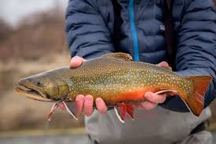

Brook trout, as seen pictured above, are known for their stunning coloration and patterns. Their bodies are dark green or blue with a red/orange belly. The back of a brook trout has a blue/purple coloring. They have spots that are usually light red,, such as white or yellow. Their fins can also feature bright orange with black spots. Brook trout have such distinctive coloring which makes them beautiful fish. Montana brook trout typically grow between 7 and 12 inches long. They can be larger than this but in the Montana record brook, the largest brook throat was recorded at 9 pounds.
